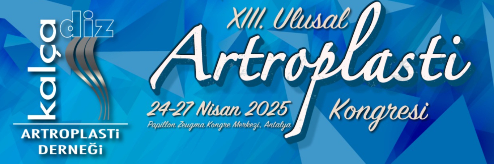

Sayın Meslektaşlarım,
Kalça Diz Artroplasti Derneği olarak iki yılda bir yaptığımız kongremizi, 24-27 Nisan 2025’de Antalya, Papillon Zeugma Kongre Merkezi’nde gerçekleştireceğiz.
Zengin bilimsel ve sosyal içerikli 13. Ulusal Kalça-Diz Artroplasti Kongresi’nin program ve duyurusunu paylaşırken, sizleri de kongremize davet etmekten mutluluk duyuyorum.
Ülkemizde son 20 yılda büyük bir ivmeyle gelişen ve dünya standartlarında gelişmeleri takip eden kalça ve diz artroplastisine gönül vermiş yetkin bir akademik hekim kadrosu ile pratikte bu alanda çalışan meslektaşlarımızı biraraya getirecek bilgi, tecrübe, beceri ve teknolojik yöntem aktarımlı interaktif toplantılar planlandı. Bilimsel toplantıyı teknoloji ve endüstrinin ürünleriyle biraraya getirirken, aynı zamanda meslektaşların tüm kongre boyunca kaynaşıp, görüş alışverişinde bulunabilecekleri bir düzenlemeyi hedefledik.
Titizlikle seçilen konularla kalça ve diz artroplastisini tüm yönleriyle gözden geçireceğimiz toplantılara aynı düzen içinde yerleştirilen bildiri bölümlerinde genç meslektaşlarımızın sunularını da tüm katılımcılar önünde değerlendirme fırsatı bulacağız. Teknoloji tarafında ise uydu sempozyum, workshop odaları ve yerinde tanıtımlarla, mesleğimizin olmazsa olmazı olan endüstri desteğini ve son gelişmelerin etkilerini hissedeceğiz.
Hekimliğin sürekli gelişen dünyasında, günceli ve gelişmeyi yakalamanın en etkin yolu olan kongrelerimize bir yenisini daha eklemenin büyük onurunu yaşayacağımız, 13. Ulusal Artroplasti kongresine katılımlarınız, Türk Ortopedi ve Travmatoloji ailesinin ve Artroplasti camiamızın birliğine ve gelişimine büyük katkıda bulunacaktır.
Saygı ve sevgi dileklerimizle, tüm meslektaşlarımıza duyururuz.
Prof. Dr. Emre Toğrul
Kalça Diz Artroplasti Derneği Başkanı
